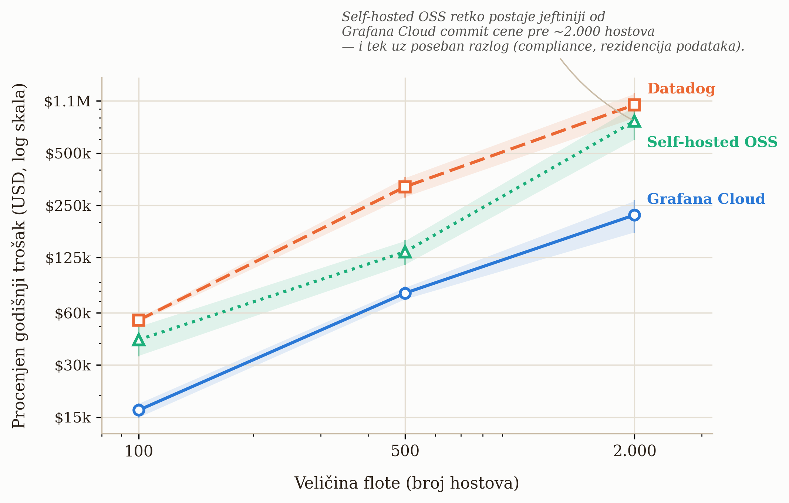

Poglavlje 3 — Izbor platforme: zašto Grafana Cloud
Zamisli malu dostavnu firmu koja tek otvara posao u novom gradu. Prva odluka nije "koji kamion da kupimo" — prva odluka je da li uopšte da se kupuje bilo šta. Iznajmljivanje voznog parka znači: platiš po kilometru i po danu, neko drugi brine o servisu, gorivu za rezervne delove i mehaničaru, i kad posao opadne u januaru, jednostavno vratiš pola kombija i prestaneš da plaćaš za njih. Kupovina voznog parka znači suprotno: veliki početni trošak, sopstvena radionica, sopstveni mehaničari na platnom spisku dvanaest meseci godišnje bez obzira na sezonu — ali cena po pređenom kilometru, na velikom obimu, na kraju padne ispod cene iznajmljivanja.
Nijedna od te dve odluke nije univerzalno "bolja". Zavisi isključivo od obima: firma sa pet kombija skoro nikad ne treba sopstvenu radionicu; firma sa pet stotina kamiona koja vozi svaki dan po istim rutama, skoro uvek treba. Greška koju prave i jedni i drugi je da odluku donesu na osnovu veličine firme, umesto na osnovu obima i predvidljivosti potrošnje.
Ista odluka, u istom obliku, čeka svaki tim koji uvodi observability: da li da se iznajmi upravljana platforma (Grafana Cloud, Datadog i slično — plaćaš po zapremini podataka i po korisniku, neko drugi drži infrastrukturu), ili da se izgradi i vodi sopstveni LGTM stack (Loki, Grafana, Tempo, Mimir — besplatan softver, ali sopstveni EKS klaster, sopstveni disk, sopstveni inženjer koji ga budi u tri ujutru kad Mimir prestane da prima upise). Ovo poglavlje je taj proračun, urađen pošteno, sa realnim cenama.
3.1 Pitanje na koje ovo poglavlje odgovara
Pre nego što knjiga uđe u tehničke detalje LGTM stacka — Loki za logove, Tempo za trejsove, Mimir za metrike, Grafana za vizuelizaciju, sve kao jedan proizvod u sledećim poglavljima — vredi odgovoriti na pitanje koje svaki čitalac postavlja prvo, i koje retko dobija pošten odgovor u dokumentaciji bilo kog dobavljača: da li se ovo uopšte isplati platiti kao uslugu, ili je jeftinije voditi sopstveno? I, usput, zašto baš Grafana Cloud, a ne Datadog, ServiceNow ili neko treći?
3.2 Kako je to urađeno — praktičan pregled
U implementaciji koju knjiga prati, odluka je doneta u dva odvojena koraka, u razmaku od nekoliko meseci — što je samo po sebi važna lekcija: ovo nije jedna odluka, nego dve različite odluke koje se lako pobrkaju.
Prvi korak — koju platformu, ako se iznajmljuje. Pre uvođenja bilo kakve instrumentacije, urađeno je poređenje cena kod nekoliko upravljanih observability platformi (Grafana Cloud, Datadog, ServiceNow Cloud Observability, New Relic) na osnovu očekivane zapremine telemetrije i veličine tima. Rezultat tog poređenja — razrađen sa realnim, javno dostupnim cenovnicima u analitičkom delu ovog poglavlja — favorizovao je Grafana Cloud po ukupnoj ceni na obimu tima koji je u pitanju, uz dodatnu prednost da besplatan tier dozvoljava da se sistem prvo proba u produkciji pre nego što se potpiše bilo kakav ugovor.
Drugi korak — iznajmiti ili graditi. Zasebno od izbora dobavljača, doneta je strateška odluka da se ne gradi sopstveni self-hosted LGTM stack na EKS-u, iz jednog razloga koji se ponavlja kroz celu ovu knjigu: firma na kojoj je implementacija rađena nije enterprise-obima korporacija — nema desetine hiljada hostova, nema postojeći platformski tim čiji je posao isključivo održavanje interne posmatračke infrastrukture. Trošak dodavanja te odgovornosti postojećem, malom infrastrukturnom timu bio je proceniv veći od cene Grafana Cloud pretplate. Ovaj proračun — sa realnim brojevima, ne samo intuicijom — razrađen je u § 3.3.
Šta se zapravo desilo posle. Odluka nije bila "podesi jednom i zaboravi". Kako je broj instrumentisanih servisa rastao, sistem je u jednom trenutku probio besplatni tier za jedan vikend — potrošnja kardinalnosti metrika je premašila kvotu brže nego što je iko planirao. Reakcija na taj trenutak nije bila "pređimo na self-hosted da izbegnemo račun" (Poglavlje 11 detaljno pokazuje zašto bi to u tom trenutku bila panična, ne racionalna odluka), nego dva paralelna poteza: nadogradnja na plaćeni Pro tier (da sistem odmah prestane da gubi podatke), i pokretanje višefaznog projekta smanjenja kardinalnosti (native histogrami, agregacija na gateway-u, podešavanje Tempo metrics-generatora — sve razrađeno u Poglavlju 11) koji je mesečni račun vratio na predvidljiv nivo. Ovo je važna razlika u odnosu na to kako se ova odluka često prikazuje u marketingu dobavljača: prelazak sa besplatnog na plaćeni tier nije bio poraz, nego očekivan, planiran korak — sistem je radio tačno ono što je trebalo, samo je otkrio granicu ranije nego što je iko očekivao.
Šta je tehnički usvojeno. Rezultat oba koraka je Grafana Cloud kao upravljana verzija četiri open-source komponente:
| Komponenta | Uloga | Šta bi bio self-hosted ekvivalent |
|---|---|---|
| Mimir | Skladištenje i upit nad metrikama (Prometheus-kompatibilan) | Sopstveni Mimir/Prometheus klaster |
| Loki | Skladištenje i upit nad logovima | Sopstveni Loki klaster + object storage |
| Tempo | Skladištenje i upit nad trejsovima | Sopstveni Tempo klaster + object storage |
| Grafana | Vizuelizacija, alarmiranje, dashboard-i | Sopstveni Grafana OSS deployment |
Sve četiri komponente su, pojedinačno, besplatan open-source softver — ono što se plaća kod Grafana Cloud-a nije softver, nego operacija: skaliranje, backup, nadogradnje, multi-tenant izolacija, 24/7 dežurstvo nad tuđom infrastrukturom. To je tačno ono što se u § 3.3 meri u dolarima.
3.3 Analitički deo — šta zaista pokazuje poređenje cena
Cenovnici, onakvi kakvi zaista jesu
Cenovnici observability platformi su namerno teški za direktno poređenje — svaka meri drugu jedinicu (host, GB, aktivna serija, korisnik, span). Tabela ispod svodi četiri realne platforme na ono što svaka zaista naplaćuje, po objavljenim cenovnicima:
| Platforma | Kako se naplaćuje | Konkretni brojevi (objavljeno) |
|---|---|---|
| Grafana Cloud (Pro) | Platforma + po korisniku + po zapremini | $19/mesec platforma + $8/aktivni korisnik (3 besplatna) + $6.50 po 1.000 aktivnih serija metrika iznad 10K besplatnih + ~$0.45/GB za logove i trejsove (obrada + upis) + $0.10/GB/mesec zadržavanje |
| Datadog | Po hostu + po funkciji + po zapremini | $15/host/mesec (infra, godišnje) + $31/host/mesec (APM) + $0.10/GB indeksiran log + $1.27 po milion unetih log događaja + $1.70 po milion indeksiranih spanova |
| New Relic | Po zapremini + po korisniku | 100 GB/mesec besplatno, zatim $0.40/GB; $49/korisnik (Core) do $99–349/korisnik (Full Platform, zavisno od nivoa) |
| ServiceNow Cloud Observability (bivši Lightstep) | Nije javno objavljeno | Cenovnik nije dostupan bez razgovora sa prodajom — samo po sebi govori ko je ciljni kupac (velika enterprise nabavka, ne samoposlužni tim od par inženjera) |
Prva, često zanemarena stavka: Grafana Cloud se naplaćuje i po korisniku, ne samo po zapremini podataka. Tim koji planira budžet isključivo na osnovu očekivane zapremine metrika/logova/trejsova, a zaboravi da svaki dodatni inženjer sa pristupom Grafani iznad prva tri nosi $8/mesec, dobiće račun veći od plana — mali iznos po glavi, ali linearan sa rastom tima, i lako se previdi jer nije "telemetrijski" trošak u užem smislu.
Na realističnom obimu male-do-srednje firme (recimo, tridesetak instrumentisanih servisa, tim od desetak inženjera sa pristupom dashboard-ima, umerena zapremina logova) ovo poređenje dosledno favorizuje Grafana Cloud nad Datadog-om — najveći razlog je Datadog-ov model "po hostu" koji se ne poklapa dobro sa kontejnerskom, efemernom infrastrukturom (desetine kratkotrajnih batch zadataka koji se pale i gase po rasporedu izgledaju kao desetine "hostova" u modelu koji je zamišljen za stabilne, dugotrajne servere). New Relic je konkurentniji na maloj zapremini (100 GB besplatno je velikodušno), ali se cena po korisniku brzo penje čim tim preraste par ljudi na Full Platform nivou. ServiceNow-ova neobjavljena cena je, paradoksalno, sama po sebi informacija: platforme koje traže "kontaktirajte prodaju" pre nego što pokažu ijedan broj, po pravilu ciljaju budžete koje mali tim nema.
Self-hosted OSS: kad se iznajmljivanje prestaje isplatiti
Ovo je pitanje koje standardna poređenja dobavljača namerno izbegavaju, jer nijedan dobavljač nema interes da ti pokaže tačku u kojoj njegov proizvod prestaje biti najjeftinija opcija. Nezavisna analiza tog pitanja — koja uključuje i sopstvenu infrastrukturu i inženjersko vreme, ne samo cenu servera — daje jasniju sliku nego intuicija "veća firma = self-hosted se isplati":

Podaci na grafikonu (procenjeni godišnji trošak na tri kontrolne tačke obima infrastrukture, iz nezavisne analize troškova za srednje tržište) pokazuju tri stvari koje vredi izdvojiti:
- Na malom i srednjem obimu (do otprilike 500 hostova), Grafana Cloud je jasno jeftiniji i od Datadog-a i od self-hosted OSS-a — čak i kad se self-hosted računa samo po ceni infrastrukture, a kamoli kad se doda plata inženjera koji tu infrastrukturu održava.
- Self-hosted OSS "izgleda jeftino" dok se računa samo cena servera, i uvek izgleda skuplje čim se doda realna cena inženjerskog vremena. Jedan FTE (inženjer sa punim radnim vremenom) posvećen isključivo održavanju observability platforme lako prelazi $300.000 godišnje ukupnog troška (plata + benefiti + overhead) — cifra koja mora ući u proračun, ne samo cena EBS diskova i EC2 instanci.
- Crossover tačka je mnogo dalje nego što intuicija "mi smo velika firma" sugeriše. Self-hosted opcija tek na obimu od nekoliko hiljada hostova počinje da se približava ceni Grafana Cloud-ovih pregovorenih (commit) cena — i čak i tada, prava odluka za self-hosted retko dolazi samo iz uštede; dolazi iz specifičnog razloga koji cloud opcija ne može da zadovolji: air-gapped okruženje, regulatorni zahtev za rezidenciju podataka u sopstvenom data centru, ili ugovorna zabrana slanja telemetrije van sopstvene infrastrukture. Bez takvog razloga, "mi smo dovoljno veliki da sami vodimo LGTM stack" je, na osnovu ovih brojeva, često pogrešan zaključak — ne zato što je self-hosted loš, nego zato što se prag isplativosti pomera dalje nego što izgleda na prvi pogled.
Preporuka za čitaoca koji vodi enterprise-obimu infrastrukturu: ako tvoja firma već ima hiljade hostova, postojeći platformski tim, i — što je ključno — konkretan razlog zašto telemetrija ne sme napustiti sopstvenu mrežu, self-hosted Grafana OSS LGTM stack na EKS-u prestaje biti "jeftinija alternativa" i postaje racionalan, dokumentovan izbor, ne rizik koji se prihvata iz štedljivosti. Za sve ispod te linije — a većina firmi je ispod te linije — Grafana Cloud (ili uporediva upravljana platforma) je racionalniji početak, sa self-hosted opcijom koja ostaje otvorena za kasnije, kad brojevi zaista to opravdaju.
Vratimo se na vozni park
Kombi koji se iznajmljuje ima sličnu logiku kao Grafana Cloud besplatni tier: nizak ulazni trošak, plaćaš tačno ono što potrošiš, i ako procena obima bude pogrešna, greška se oseti odmah kroz veći račun — ne kroz katastrofu, jer firma za iznajmljivanje kombija ne prestaje da radi kad ti probiješ svoj mesečni kilometražni limit, baš kao što Grafana Cloud ne prestaje da radi kad se probije kvota, samo počne da naplaćuje više. Sopstvena radionica ima smisla tek kad je obim toliko predvidljiv i toliko velik da fiksni trošak mehaničara prestane da bude rizik i postane ušteda — što je tačno onaj prag od nekoliko hiljada hostova sa grafikona iznad, ne "firma ima više od pedeset zaposlenih".
3.4 Skupljena pravila iz ovog poglavlja
- Ovo su dve odvojene odluke, ne jedna: (1) koju platformu iznajmiti, ako se iznajmljuje, i (2) da li uopšte iznajmiti ili graditi sopstveno. Ne meriti ih istim argumentom.
- Kad poredite cenu platformi, prevedite sve na istu jedinicu pre poređenja — "po hostu" i "po GB" i "po aktivnoj seriji" nisu uporedivi bez prevoda na vaš stvarni obim.
- Ne zaboravite da uračunate cenu po korisniku (sedištu) uz cenu po zapremini podataka — kod nekih platformi (Grafana Cloud, New Relic) to raste linearno sa veličinom tima, ne sa količinom telemetrije.
- Self-hosted "besplatan softver" nikad nije besplatan — uračunajte punu cenu bar jednog FTE-a (~$300k+/godišnje ukupnog troška) pre poređenja sa cenom upravljane platforme.
- "Mi smo velika firma" nije dovoljan razlog za self-hosted. Dovoljan razlog je konkretan: obim od nekoliko hiljada hostova i jasan operativni ili regulatorni razlog zašto telemetrija ne sme napustiti sopstvenu mrežu.
- Probijanje besplatnog tier-a nije poraz — to je signal da je sistem stigao do sledeće faze, i treba mu planiran odgovor (nadogradnja + kontrola kardinalnosti), ne panična migracija.
3.5 Vežba za čitaoca
Uzmi trenutnu (ili planiranu) zapreminu telemetrije svog sistema — broj instrumentisanih servisa, broj hostova/zadataka, procenjenu zapreminu logova u GB/mesec, i veličinu tima koji treba pristup dashboard-ima. Prevedi tu zapreminu na cenu kod bar dve platforme iz tabele u § 3.3, uključujući i cenu po korisniku. Zatim, odvojeno, proceni realnu godišnju cenu jednog FTE-a u tvom timu koji bi delimično (recimo 20%) bio posvećen održavanju self-hosted alternative. Uporedi sva tri broja. Ako je razlika manja od 20%, odluka verovatno ne treba da bude doneta na osnovu cene — treba tražiti drugi kriterijum (operativni rizik, regulatorni zahtev, postojeća ekspertiza tima).
Izvori korišćeni u analitičkom delu (za proveru/citiranje u finalnoj verziji)
- Grafana Cloud Pricing In 2026: What It Really Costs — CloudZero
- Grafana Cloud Pricing 2026 — MonitoringCost.com
- Datadog Pricing 2026: Full Cost Breakdown & How to Save — Last9
- New Relic Pricing 2026 — MonitoringCost.com
- ServiceNow Cloud Observability Pricing — TrustRadius
- Datadog vs Grafana Cloud vs self-hosted Grafana: the mid-market observability cost decision — Optivulnix